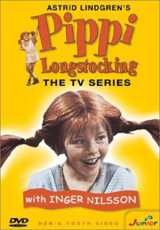

")
Alternativ: Pippi Longstocking (Englischer Titel)
 
 IMDB-Wertung: 7.3 / 10
IMDB-Wertung: 7.3 / 10  Metascore:
Metascore: 
Das Mädchen Pippilotta Viktualia Rollgardina Schokominza Efraimstochter Langstrumpf lebt mit ihrem Affen Herrn Nilsson und ihrem Pferd Kleiner Onkel in der Villa Kunterbunt. Pippi hat Bärenkräfte und besitzt einen Koffer mit einem unerschöpflichen Vorrat an Goldmünzen, den ihr Vater, Kapitän Langstrumpf, ihr überlassen hat. Kapitän Langstrumpf fährt zur See und sieht seine Tochter Pippi nur selten, wenn er mal anlegt.Pippis beste Freunde sind die langweiligen Geschwister Tommi und Annika, neun und acht Jahre alt, die neben der Villa Kunterbunt mit ihren Eltern wohnen. Pippi heckt den ganzen Tag Streiche aus und setzt sich erfolgreich gegen die Gauner Donner-Carl und Blom zur Wehr, die es auf Pippis Goldmünzen abgesehen haben. Weil Pippi allein lebt und nicht zur Schule geht (sie hält nichts von "Plutimikation"), will Fräulein Prüsselius sie ins Heim stecken, was ihr jedoch nicht gelingt.
Jahr: 1969
Dauer: 27 Minuten
FSK:
Land: Schweden Studio: NOSTonspuren:
Untertitel:
Auflösung: 1080p (1440x1080) Größe: 128000 MB
Genre: Abenteuer, Fantasy, Familie, TV-Serie
Regisseur: Olle Hellbom
Drehbuch: Gary Dauberman
Soundtrack:
Darsteller:
Datei: X:\Kinder Serien\Pippi Langstrumpf\01 - Pippi zieht in die Villa Kunterbunt.mkv seit 12.02.2017
Festplatte: Kinder-Filme+Trick
 Es gibt insgesamt 56 Filme in der Gruppe 'Kinder Serien'
Es gibt insgesamt 56 Filme in der Gruppe 'Kinder Serien'